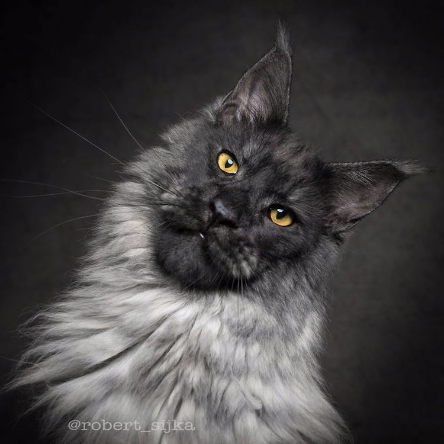

The Maine Coon is the largest domesticated cat breed. It has a distinctive physical appearance and valuable hunting skills. It is one of the oldest natural breeds in North America, specifically native to the state of Maine, where it is the official state cat.
 Back